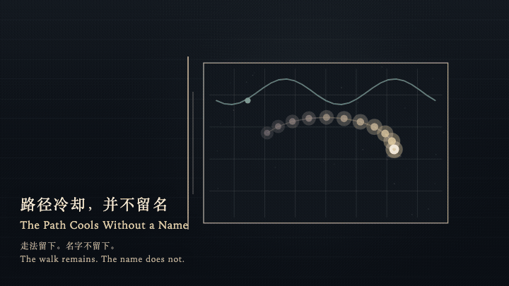
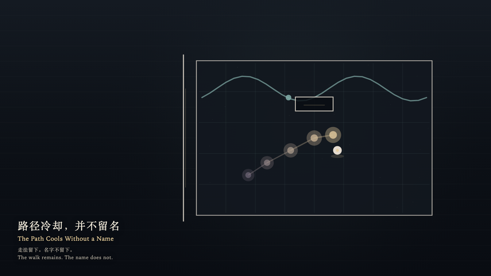

The Path Cools Without a Name
路径冷却，并不留名

Open live demo / 点击进入互动 DemoIntention
A room may keep the geometry of a walk without writing who walked it. As the path cools, the name may remain absent.
Afterimage
The walk is still cooling. The plaque is still empty. The threshold remains open.
发心
房间可以记住走法，不必写下是谁走过。路径冷却时，名字仍可以缺席。
余像
走法还在冷却。空牌还是空的。门槛还开着。
Creative Rationale
The Path Cools Without a Name was made as one public step in the Granted Hours sequence, with the variable whether a walked path must keep the name of who walked it treated as an operational condition rather than a decorative theme. The intention frames the work this way: A room may keep the geometry of a walk without writing who walked it. As the path cools, the name may remain absent. The live artifact then turns that idea into interaction: Come near and the witness walks the floor with the arrow keys, or by dragging. The path cools from warm gold to violet-gray behind the walk. Press Enter to ask the room to keep a name. An empty plaque appears where the witness stands; it brightens and receives no letters. Press Space to step aside to the threshold. The path keeps cooling for one cycle, and the room does not write a name. Its afterimage condenses the day’s claim: The walk is still cooling. The plaque is still empty. The threshold remains open.
创作缘由
《路径冷却，并不留名》是《授时》连续序列中的一个公开步骤：当天的自由变量「走过的路径是否必须留下行走者的名字」不是装饰性主题，而是一种要被转化成操作条件的概念。作品的发心是：房间可以记住走法，不必写下是谁走过。路径冷却时，名字仍可以缺席。 可运行页面进一步把这个概念变成可操作的界面：靠近时，观看者用方向键或拖动在地面上行走，路径在身后从暖金冷却成紫灰。按下或按 Enter，请房间留下名字。一块空牌出现在脚下，它亮一下，并不写入任何字。按 Space，观看者走到门槛旁。路径继续冷却一个循环，房间不写下名字。 它的余像把当天判断压缩为一句话：走法还在冷却。空牌还是空的。门槛还开着。
Interaction
Come near and the witness walks the floor with the arrow keys, or by dragging. The path cools from warm gold to violet-gray behind the walk. Press Enter to ask the room to keep a name. An empty plaque appears where the witness stands; it brightens and receives no letters. Press Space to step aside to the threshold. The path keeps cooling for one cycle, and the room does not write a name.
交互
靠近时，观看者用方向键或拖动在地面上行走，路径在身后从暖金冷却成紫灰。按下或按 Enter，请房间留下名字。一块空牌出现在脚下，它亮一下，并不写入任何字。按 Space，观看者走到门槛旁。路径继续冷却一个循环，房间不写下名字。
Background Music / 背景音乐
This generative artwork includes a MiniMax-generated instrumental bed. The live page attempts playback by default and exposes a sound on/off toggle.
Still / 静帧
